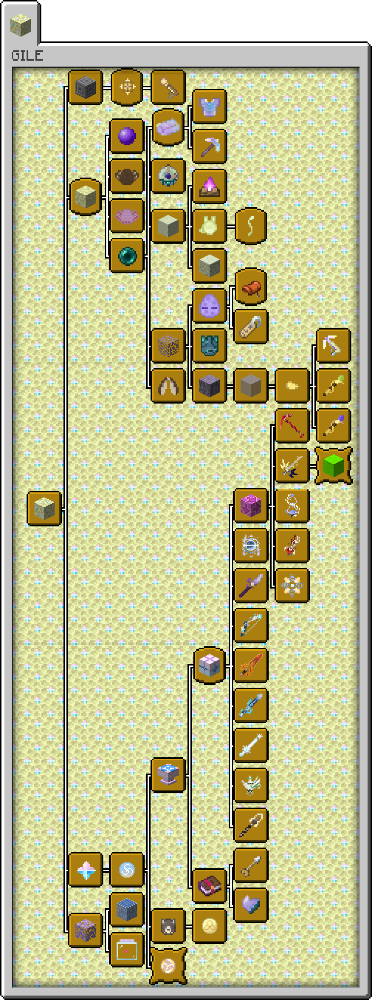

GILE
Genshin Impact:
Lunar Expansion
A Hoyoverse-inspired expansion for Minecraft that brings new materials, biomes, entities, utilities, weapons and custom abilities to your world.
CURRENT VERSION
1.0.0 Release
Fabric · Minecraft 26.1
Documentation
🚀 Getting StartedWhat to begin with your GILE adventure.
🏰 Ancient RuinsWhat is new in the Overworld and how to get to the Moon.
🦋 End ThresholdThe only new but still unique Overworld biome.
🌙 The MoonEvery biome & moon overall flora and fauna detail.
🌳 Ghostly ThicketsCute overgrown biiome, providing the only End wood type.
🌵 Moon DesertLeast habitated and emptier than overall End biome.
⚒️ Tools & UtilsWhat can help you to progress with the mod.
⭐ Wising MechanicsPrimogem, Wish Table & Sigils uses.
🔥 Elemental WeaponsWishing results - elemental weapons, ultimate goal.
⚔️ Legendary WeaponsWishing results - legendary weapons, ultimate goal.
What's in GILE?
- Expanded Dimensions — Ghostly Thickets, Moon Desert & End Threshold.
- Entities — Ruin Guard, Weasel Thiefs, Ender Fly, Hovering Ghost, Gloomy Lynx, Luminous, Moth, Jerboa, Void Slime.
- Decorative blocks — Pearlescent, Moon Sandstone, Ghostly Wood, Fluo, Moon Fire and Glitter block sets.
- Utilities — Flutterer, Grappling Hook, Shrinker, Enlarger, Warp Clock, Heart of Emergency and Enderite equipment tool set.
- Elemental Weapons — Genshin-inspired weapons with custom abilities for 8 elements.
- Legendary Weapons — Even better rare imaginary weapons with more utility at higher cost.
GILE Progression
Follow the paths of exploration, wishing, elemental powers and lunar discovery. Each connection represents the actual parent relationship between advancements.
